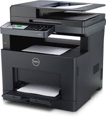
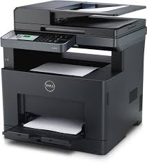

Venta de cartuchos de toner
ITANS TONER SERVICE
Tenemos la mayoria de las marcas de cartuchos de toner compatibles, recargas y originales, con garantias al 100%
Ver pasos de la actividad¿Qué contiene este proyecto?
- Menú de navegación sticky con estado activo y hamburguesa en móvil.
- Galería de videos (HTML5) con tarjetas responsivas.
- Galería de audios con pistas de ejemplo.
- Sección de mapas con un buscador que actualiza el mapa embed.
- Galería de imágenes con modal (lightbox) y filtros por categoría.
Tip: reemplaza las URLs de ejemplo por archivos locales en /assets/ cuando lo subas a tu proyecto.
🎬 Galería de videos
Ejemplos con <video> usando controls y preload="none" (mejor rendimiento).
Big Buck Bunny (mp4)
720pSample 5s (mp4)
Recarga de pantumReview Impresora Brother (mp4)
MP4🎧 Galería de audios
Etiquetas <audio controls> con pistas de ejemplo.
Sample 6s (mp3)
Sample 3s (mp3)
🗺️ Mapas
Usamos un <iframe> de Google Maps (no requiere API key para embed). Busca una ciudad y actualiza el mapa.
🖼️ Galería de imágenes
Haz clic para ver en modal. Usa los filtros por categoría.

 

Soluciones de Impresión Confiables
Venta de Cartuchos de Tóner y Mantenimiento de Impresoras.
¡16 años de experiencia en el mercado!
Contáctanos HoyNuestros Servicios
Venta de Cartuchos de Tóner
Suministro de cartuchos de tóner originales y compatibles de alta calidad para todas las marcas.
Mantenimiento de Impresoras
Reparación, limpieza y mantenimiento preventivo para prolongar la vida útil de sus equipos de impresión.
Asesoría Especializada
Ayuda personalizada para elegir el mejor equipo y consumible que se adapte a sus necesidades.
Sobre ITANS Toner Service
Somos una empresa dedicada a ofrecer **soluciones sntegrales en impresión**, con **16 años de trayectoria** en el sector. Nuestra misión es garantizar el óptimo funcionamiento de sus equipos, ofreciendo productos de calidad y un servicio técnico profesional.
Nuestra experiencia es su garantía de un servicio rápido, eficiente y confiable.
Contáctanos
Estamos listos para ayudarte con tus necesidades de tóner y mantenimiento.
📞 Teléfono: 0987-312=226
📧 Email: claudio1caballero1@gmail.com
¡Hola! Soy Claudio Caballero 👋
Un poco sobre mí y lo que me apasiona.
¿Quién Soy?
Soy una persona con un gran interés en Al area de Programacion y todo lo que tenga que ver a la informatica. Vivo en la ciudad de San Lorenzo-Paraguay** y disfruto mucho de **Ir a pescar y conocer nuevos lugares**.
Mi enfoque actual está en aprender más sobre Programacion de sistemas informaticos, para luego poder ofrecer servicios a mis futuros cliente.
Mis Habilidades Destacadas
- ✨ **electricitad domiciliario e industrial**
- 🛠️ **Tecnico en informatica**
- 💡 **instalador de camaras**
- 💡 **Actualmente soy emprendedor en el rubro de impresoras y ventas de cartuchos de toner**
Contactemos
Puedes encontrarme en: facebook como Claudio Caballero
📧 Email: claudio1caballero1@gmail.com
🧭 Actividad didáctica paso a paso
Instrucciones (expandidas)
- Clona este archivo como index.html. Abre con un navegador.
- Menú de navegación: agrega un ítem Contacto y enlázalo a un nuevo #contacto (puedes crear la sección vacía). Comprueba que se marque activo al hacer scroll.
- Galería de videos: sustituye una URL por un video local en /assets/videos/. Asegúrate de que
preload="none"siga presente. - Audios: añade una cuarta pista. Debe reproducirse correctamente y tener título.
- Mapas: prueba el buscador con una ciudad distinta y crea un botón rápido para Ciudad del Este.
- Imágenes: agrega 3 imágenes más (dos naturaleza, una ciudad) y verifica que el filtro funcione. Al hacer clic, deben abrir en el modal.
- Accesibilidad: confirma que todos los elementos interactivos tienen texto,
aria-labeloaltadecuados. Prueba cerrar el modal con la tecla Esc. - Bonus: separa el CSS y JS en ficheros /css/styles.css y /js/app.js y enlázalos desde el HTML.
Cuando termines, haz una breve autoevaluación: ¿qué aprendiste de HTML semántico, responsive y JS del DOM?